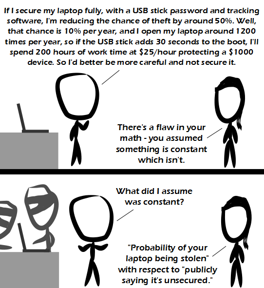

Comic JK 922
When I Feel Like It
⇤
<
?
>
⇥

⇤
<
?
>
⇥
Forum
.
RSS
.
Digg
.
Facebook
.
Reddit
.
Twitter
.
Stumbleupon
Enter your thoughts on number 922 here. Please, no spamming, trolling, phreaking, or using passwords:12345 >Darn! Now everyone can see my password! >> Just change it to opensesame or trustno1 or abc123 >>> I always use the password '*********' so anyone looking at the plaintext assumes it has been censored. >>>> I can only read "hunter2" there... >>>> Best password? IrapeChildren69 You feel so dirty typing it you give up stealing the account. >>> And now I have to change my password for everything. Hopefully the websites allow '..........' >>>> My password is ytp9w3e750esr987gveg0w9347t79e8a67fg98q76erg987e6w9e8rg >>>>> Error - password not secure enough. Passwords must contain at least one letter, one number, and one special character. >>>>>> EUERERHHHGHEGHRGEAHSJDGAUSYDGDBHXXNNCNKDSJJNDJNDMBBBBBBMMDAARRRRRRRRRGHHHG! (not a password, it's rage provoked by dealing with countless stupid password rules). >>>>>>>Especially since they often force you to use less secure passwords, as they must conform to very specific rules >>Agreed! Especially the rules that make you have shorter passwords. And every website is different! Some allow 12 characters, some 14, some 8 (that last one might be a lie). I wonder if it comes down to lazy/unqualified programmers who don't know an easy way to make the website accept longer passwords, so shorter passwords are a cop out. >>>Hopefully. If people actually know better and implement their system that way anyway, that would be sad :( >>Wouldn't that only add 10 hours a year to the boot time? >>>Right but he would on average lose $100 per year if he didn't secure it. He's back!!! Ninjas stealing laptops? Ninjas don't need laptops! Psh! Tracking software will only frustrate you. (this is relevant and funny, not spam) www.insidebayarea.com/top-stories/ci_20675820/berkeley-police-chief-orders-detectives-track-down-sons Your mother is glad you're back at last.. she was getting kind of lonely. Actually your password is automatically filtered when you write it in the box. Here is mine 'your_anus' He has to factor in the time it takes to reconfigure a new laptop so he is back up at 100% efficiency (relatively to his previous efficiency). But yes, you always have to weight benefits and costs of measures against each other (except when the cost to weight them most likely makes it a bad decision anyway - yipieh, analysis paralysis!!!). Having a password will not stop your laptop being stolen - thieves don't care if it can be used, they just know they can get a good price for it on eBay! My password is gleleg09